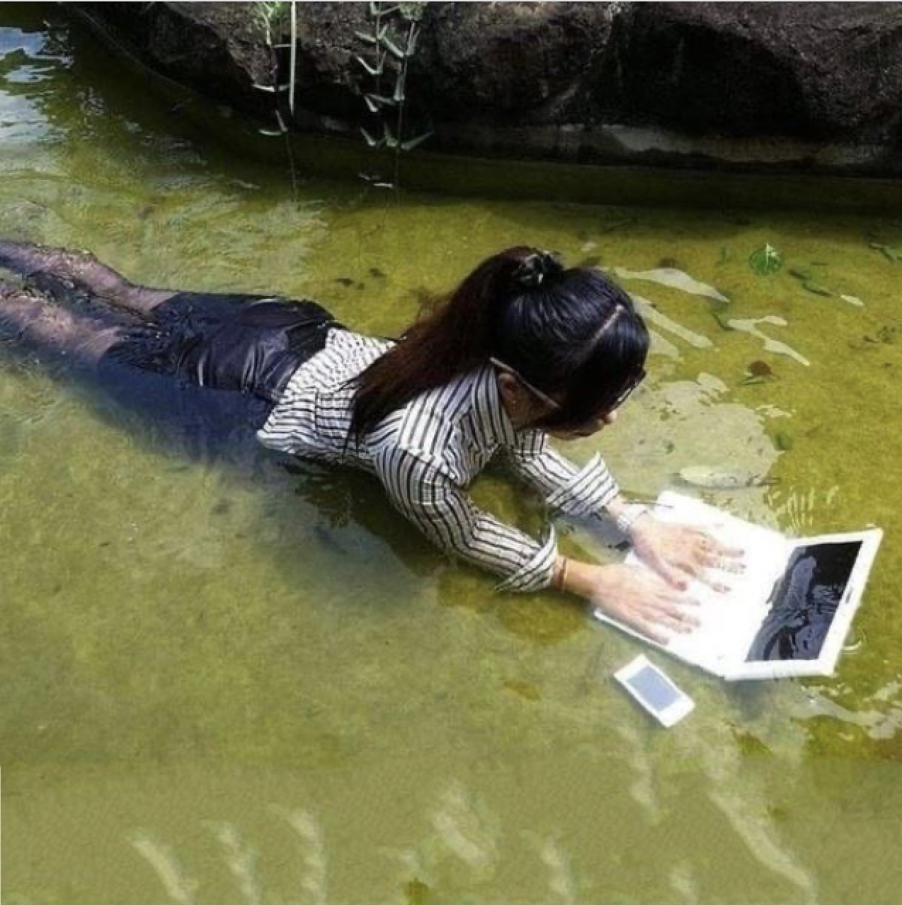

Making a Poetic Web(site)
01. Exercise One: A Moving Poem 02. Exercise Two: I love it when you 03. Exercise Three: Rip it off
05. Publishing
Discord My Email
Important Notes
If you questions at any point, feel free to raise me!Links
Are.na
(Are.na is a website used to connect & discover ideas. It's like Pinterest but with better community, curation, and features. I personally use it as a knowledge repository and as a way of discovering other artists' and designers' influences. Here are some of my favorite Are.na channels on websites and the internet:)Poetic Web, by Chia ✧ soft, cozy, calming corners on the internet by Rachel Chakra softer digital futures by Sorrel Salb the web is an ocean, Sienna Kwami What would you put on a very small internet?, Ethan Anderson Poetic Web Poetic Web
00. Welcome
Logistics
This is targeted towards non-developers. If you are experienced with HTML/CSS/JS, it will be more interesting conceptually rather than technically.
You will not be learning best practices. I want to think about poetry that is plundered and part of all that had come before it. This is applied to websites. We will be ripping things apart, I will be directing you to Google (because the most crucial learning is "how to think" and "how to write queries and prompts that get me to where I want to be quickly" more than anything else)... this is focused on expression, first and foremost.
If you ever have questions or need any help, please don't hesitate to ask! Everything is contained in this website so you can look at things at your own pace. Feel free to dwell more into an activity that spoke to you, etc.
Exercise A. Please introduce yourself in the Google Docs below. Feel free to comment on other people's messages!
You can write your name & where you're from and/or based, your website (if any), and your favorite website. If you'd like to speak up and share, you're encouraged to do so!
Who are you?
Open Cryptpad in another tabNext, another icebreaker wall!
If you haven't gotten enough, here are more prompts that you can answer.
- A Wikipedia page or fact that
- A rare sound in your life (what haven't you heard in a long while?)
- The last piece of media you consumed that really changed you (a serious recommendation!)
- Your favorite packaging
- Your go-to question when getting to know something niche about a person, and your go-to response
- What you're excited about
Drag around and type. Please don't erase anyone else's words!
Open Your World of Text in another tab
(\(\
( -.-)
o_(")(")
Why a poetic web?
Almost every website you browse today is maintained by large corporations, seeking to centralize our behavior. They are privately-controlled spaces that act as public ones. Go Google "Create a website" and a million 'site builders' promise you e-commerce solutions, ways to drive traffic, launch your business, build your brand or portfolio, showcase your art... Maybe you even want to do one of these things. We connect to websites but often feel disconected. Notice how many of these relate to attention, a performance, a gathering? (That's not the only takeaway, but a big one.)
What is the web today? What can the web be? What can a website be?
The web is only the way it is because people have built it to be this way. It is seemingly strange that today, we seemingly have more tools than ever — but it seems a 'rarer' act to go out and publish something... but this shouldn't be a surprise. Information is obscured and gated, places where we can express ourselves and connect are often monetized. This is why it is worth moving towards a more handmade web—one that we've shaped ourselves. After all, the web is only the way it is because people have built it to be this way.
Once you resist the current standard of what a 'website' in the 'web' looks like today, it is far easier to imagine what a website could be.
A website after all, is fundamentally a vessel. It doesn't even have to serve 'content'. It doesn't have to be shared out to the whole world; it can be a link that only your friends have, or you can keep it all to yourself. It can have pictures and text and other links across multiple pages and even custom interactions, or it can just be a Google Doc. You can gather at a website from anywhere in the world in a single click, and begin sharing different entrypoints to your website by sharing the URL. You can have multiple websites for specific purposes, it doesn't have to host everything. Publishing' your website doesn't have to mean that it's finished; you are free to make an edit and have it appear instantaneously a second later. Or you can never touch it again and let it die. You can remove anything at once. You design the environment.
A website is essentially a world you design. What will yours be?
A poetic web is one that I imagine to be about creativity, expression, and the handmade. A lot of these thoughts resist the current state of the web: incredibly centralized, capital-driven, attention-seeking—far from what we associate with art.
"The more proprietary, predatory, and puerile a place the web becomes, the more committed I am to using it in poetic and intransigent ways." — JR Carpenter, March 2015
Making a Poetic Web
I want to think about your existing relationship with the internet and your thoughts about websites. What can a website be, and what doesn't it have to be?
Let go of your existing notions of what the modern web looks like; return to more natural influences, for instance. A website can be anything. Compare it to something abstract, an animal, or another container with specific affordances. Think of qualities that you want in your website. Think of it as a piece of art, like a painting or a poem.
Contribute to the Google Doc below.
can be...
- An act of making a world
- Ever-changing
- Deleteable, at any moment
- Contextual, very
- One-of-a-kind
- Made in a day
- A bridge to someplace else
- For yourself or your loved ones
- A window or portal
- Intentionally slow
- An art piece
- Made easily
- Personal, intimate
- A single image
- Can be authentic (as you are in real life)
- Express one part of yourself, or many
- Part of the earth
- Your own archive or reference
- Or just the URL itself
- Build on or even repeat your existing work
- A garden
- An open question
- A gathering space
- Unfinished
- Living
- Temporary
- Bits and snippets of something else
doesn't have to be...
- Useful
- Finished
- The host for everything
- Extensible (just make a new website and space)
- Made in a day
- On the same platform as everyone else's
- One page, or several
- Shared to everyone
- A space for "content"
- A solo effort
- Performed
- Something that looks like every other website
- Made with templates
- Made easily
- For a public audience
- Monetized (it can be free!)
- Something entirely new
- Expansive
- Updated all the time
- Performant or optimized
- Perfectly coded
- ...or even coded "correctly"
What can a website be?
Open Google Doc in another tabMore readings...
My website is a shifting house next to a river of knowledge. What could yours be?, Laurel Schwulst A Website Is A World How to build a low-tech website An app can be a home-cooked meal, Robin Sloan Why I Have a Website and You Should Too, Jamie TannaExercise One:
A Moving Poem
In the workshop's most literal sense: let's try creating a moving poem. Are you familiar with concrete poetry? Interactive fiction? What can the nature of a website's interactivity provide to words?
Poetic websites
Sea and Spar Between by Nick Montfort and Stephanie Strickland; a poetry generator defined "by space of language populated by a number of stanzas comparable to the number of fish in the sea, around 225 trillion" Poetic Times by Reidar Pritzel, displaying a random NYT headline that you can move around I Never Believe it Until it Happens Again by Tiger Dingsun The HTML Review, a journal of literature made to exist on the web There's Always The Asteroid by Carly Stone Poem Club, a collection of net poems elegy.isnt.online by Jake Chvatal, a decaying web experimentMaking a Poetic Web
With basic HTML, CSS, Javascript, and jQuery, we'll be manipulating a moving poem. The template is set up and we'll be manipulating values and learning as we go along. If you want to know how to do something, please go ahead and ask it or try to search for yourself!
Prompts...
- Change words.
- Delete a word.
- Change the title of the page to your poem's working title. You can change the title within the
<title>tag at about Line 5 of the file. - Add your own words.
Copy a<span>and add your own text. Note that this tag is always paired with a closing</span>tag. - One
<span>tag hasclass="unsortable"inside of it. Classes are a type of "selector" used to style webpages. The<style>tags at the top contain rules for how stuff on the page looks; classes are selected with the.preceding their name. The styling declarations are contained in the curly brackets. Here, their opacity is faded. - W3Schools has this extensive CSS reference. Add CSS properties you find interesting (and applicable) with the respective values you see are allowed after reading their page. Reload your page and see results.
- All HTML elements can be supplemented with attributes. For instance, it's not enough to write the
<img>tag if we wanted to add an image — where is the image link going to be placed? Attributes provide additional information to the element, always added in the opening tag. - What if you add a
titleattribute to one of the<span>? This would look like<span title="The wind rustles...">. Hover over the element you added a title attribute to and reveal another layer of text. You might be interested in alt text as poetry. - This poem uses jQuery UI to "sort" its words, a library that extends jQuery with pre-written functions for fancy interactions. It has other functions built in that you can read about here. What if you change
sortabletodraggable? Do you need to change anything to make it work?
Don't forget to always reach out if you want to know how to do something or if you're stuck. Someone else might be thinking the same!